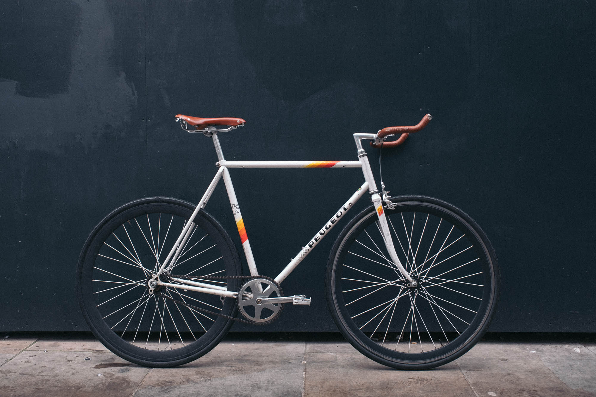
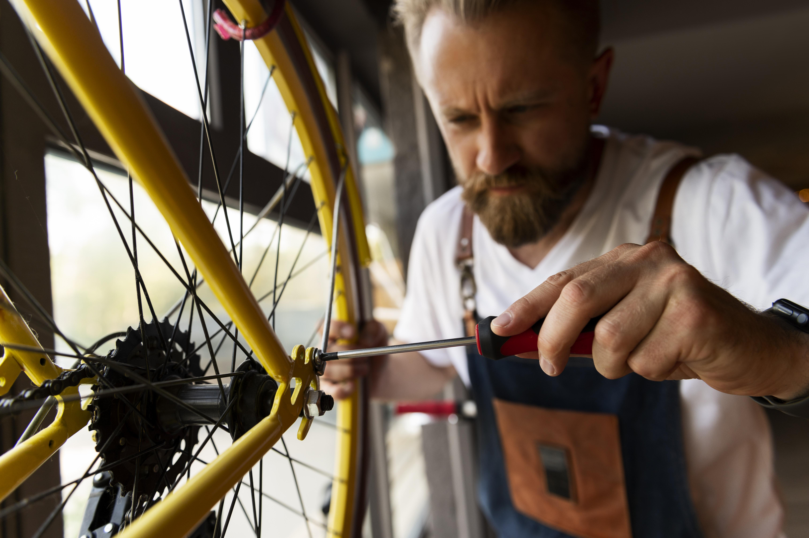

Trīs vienkārši soļi
Mēs padarām velo servisu ērtu — nav jādomā par transportu vai laiku
Piesakies
Sazinieties ar mums un norunājiet ērtāko laiku. Norādiet adresi un servisa veidu — par pārējo parūpēsimies mēs.
Apkope
Aizbraukšu pēc velosipēda un dažu dienu laikā veikšu profesionālu apkopi vai remontu — kvalitatīvi un rūpīgi.
Saņem atpakaļ
Piegādāšu tavu velosipēdu atpakaļ norunātajā vietā un laikā — pilnīgi gatavu nākamajai braucienreizei.

Profesionāls serviss
ar personīgu pieeju
Esam vietējais veloserviss Ozolniekos, kas piedāvā pilnu apkopes pakalpojumu klāstu — no bremžu regulēšanas līdz pilnai velosipēda tīrīšanai un montāžai. Katrs velosipēds tiek apkalpots ar uzmanību un rūpību.
- Brīva savākšana no jebkuras vietas
- Ātra apkalpošana — dažas dienas
- Piegāde atpakaļ iekļauta
- Skaidrs un godīgs cenu saraksts
FAQ
Neatrodi atbildi? Sazinieties tieši — ar prieku palīdzēsim.
01 Vai uzstādāt detaļas, ko klients nopircis pats?
Jā! Labprāt uzstādām jebkuras jaunas oriģinālās detaļas, ko iegādājāties tiešsaistē vai veikalā. Vienīgais izņēmums — detaļas, kuras uzskatām par nedrošām vai kas nav saderīgas ar jūsu velosipēda sistēmu. Šaubu gadījumā — vienmēr konsultēsim iepriekš.
02 Cik ilgi aizņem apkope vai remonts?
Vairumā gadījumu velosipēds tiek apkopots tajā pašā dienā vai nākamajā dienā. Precīzāki laiki norādīti cenu lapā — tas atkarīgs no darba apjoma un velosipēda stāvokļa. Ja nepieciešams pasūtīt detaļas, velosipēds tiek atgriezts 1–7 dienu laikā.
03 Kādas maksājumu metodes pieņemat?
Pieņemam bankas pārskaitījumu, Revolut un skaidru naudu. Maksājums tiek veikts brīdī, kad atgriežam jūsu velosipēdu — pēc darba pabeigšanas.
04 Vai savākšana un piegāde ir bezmaksas?
Jā! Savākšana un piegāde Ozolniekos un tuvākajā apkārtnē ir bez papildu maksas. Minimālais pasūtījums — € 20 par pakalpojumu. Ja dzīvojat ārpus mūsu parastās zonas — sazinieties, vienosimies par cenu.
05 Kāda ir jūsu apkalpošanas zona?
Galvenokārt strādājam Ozolniekos un Jelgavas novadā. Ja dzīvojat tālāk — zvaniet, mēs atraisīsim risinājumu un vienosimies par papildu ceļa izmaksām.
06 Vai piedāvājat pakalpojumus organizācijām vai grupām?
Jā! Piedāvājam apkopes pakalpojumus skolām, uzņēmumiem un citām organizācijām ar vairākiem velosipēdiem. Sazinieties, lai pārrunātu grafiku un cenu.
07 Kādi ir darba laiki?
Parastais darba laiks ir no 8:00 līdz 18:00. Esam elastīgi — ja šis laiks jums neiederas, sazinieties un vienosimies par piemērotāko laiku.
08 Ko darīt, ja nezinu, kāda apkope nepieciešama?
Neuztraucieties — vienkārši aprakstiet problēmu, ko pamanāt. Mēs apskatīsim velosipēdu, noskaidrosim problēmu un sniegsim godīgu novērtējumu. Konsultācija bez papildu maksas.
Vai tavam velosipēdam
nepieciešama apkope?
Sazinieties ar mums un pieteikt servisu jau šodien. Savākšana un piegāde — bez maksas.
Pieteikt servisu